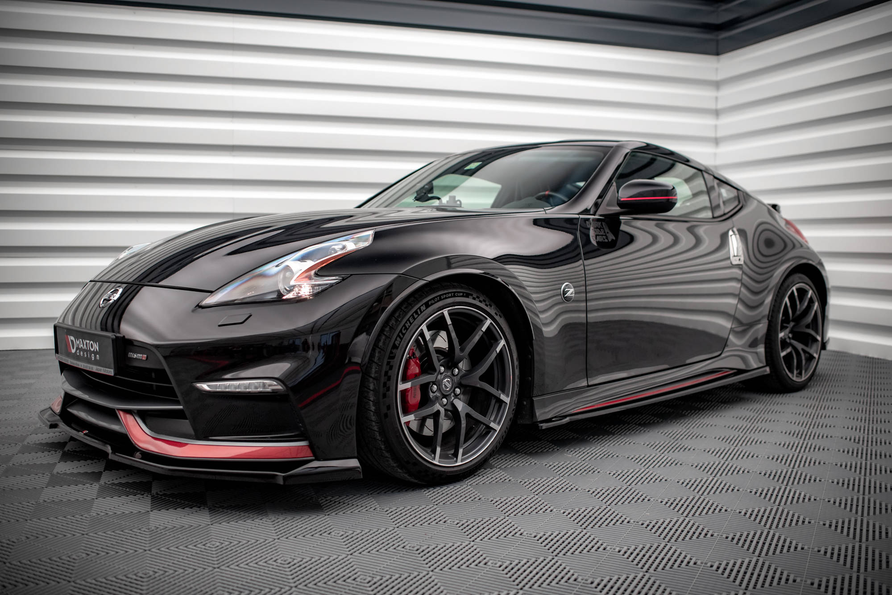

Nissan 370Z – samochód sportowy produkowany przez Nissan Motors. Został zapowiedziany 29 października 2008 roku, zaś jego premierowa prezentacja miała miejsce na 2008 Greater Los Angeles Auto Show. 370Z jest szóstą generacją rodziny modeli Z Nissana, którą zapoczątkował w latach 70. Datsun 240Z. Samochód napędzany jest silnikiem VQ37VHR 3,7l DOHC V6 wyposażonym w systemy Variable Valve Event i Lift Control, który generuje moc 332 bhp (248 kW). Moc przenoszona jest na koła tylne poprzez nową, siedmiobiegową, automatyczną skrzynię biegów z manetkami zmiany biegów zamontowanymi pod kierownicą lub przez 6-biegową skrzynię manualną.